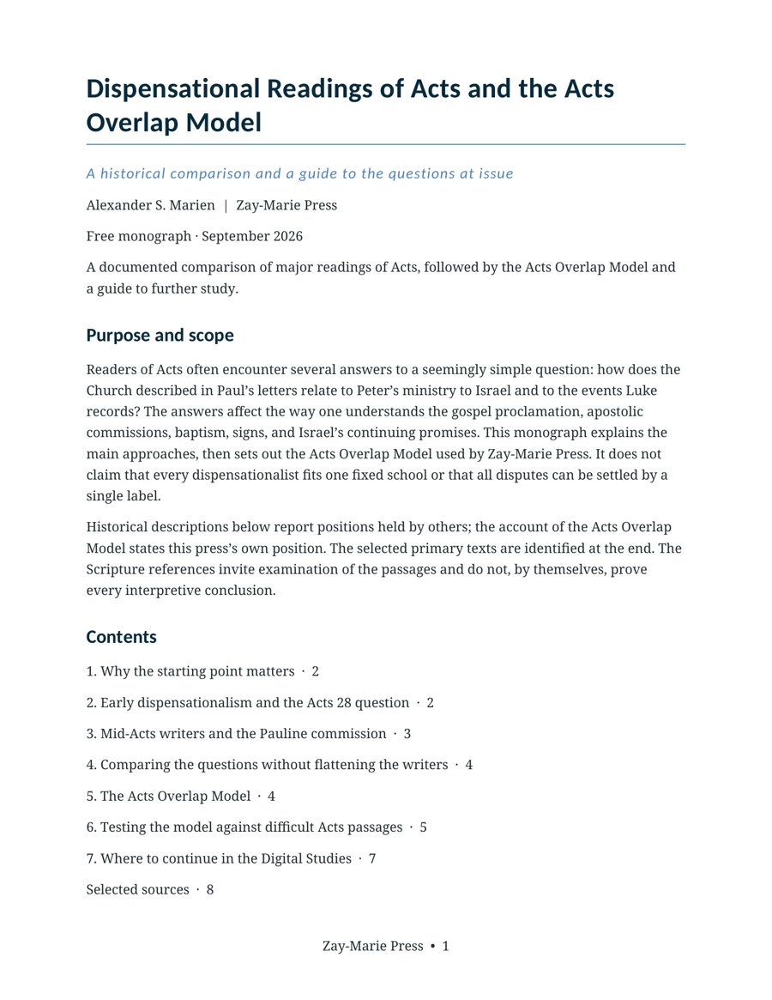

Documented historical positions
Compare Darby’s Pentecost account, an Acts 28 reading, and Mid-Acts writers, including Baker’s Acts 13 conclusion and his disagreement with concurrent programs.
A Historical Comparison and a Guide to the Questions at Issue
Why do readers place the beginning of the Body of Christ at different points in Acts? This guide compares major readings, explains the Acts Overlap Model used by Zay-Marie Press, and identifies the passages that distinguish them.

The historical survey reports what named writers argued. Its final sections state the Zay-Marie Press Acts Overlap Model, then test the distinction between a narrated event and a present obligation in selected Acts passages.
Compare Darby’s Pentecost account, an Acts 28 reading, and Mid-Acts writers, including Baker’s Acts 13 conclusion and his disagreement with concurrent programs.
The Mystery begins with Paul in Acts 9. Israel’s Prophecy Program and the Mystery Program operate concurrently through Acts 28, when Israel’s national prophetic operation is suspended.
Consider Timothy’s circumcision, Paul’s temple participation, signs and baptisms, and Acts 28 with attention to audience, commission, purpose, and governing instruction.
Notice where each approach places the Body’s beginning and what it makes of Acts 28.
Keep Acts open and check the claims about Paul’s call, the Jerusalem Council, Acts-era conduct, and Israel’s judicial suspension.
Use the final reading guide when one question calls for a fuller passage-by-passage examination.
Each Digital Study stands on its own. These three routes develop questions introduced by the free monograph.
The Beginning of the Body of Christ examines its beginning in relation to Paul’s calling, beyond the survey offered here.
Explore the study →Peter and Paul: Distinct Apostolic Commissions compares their assignments during the Acts overlap without giving Paul a second apostleship.
Explore the study →Why Acts Is Not a Universal Experience Manual tests narrated signs, practices, and apostolic actions against present governing instruction.
Explore the study →The monograph’s reading guide gives additional routes into the catalog. The Study Connections guide lets you explore how the wider collection relates by question and theme.